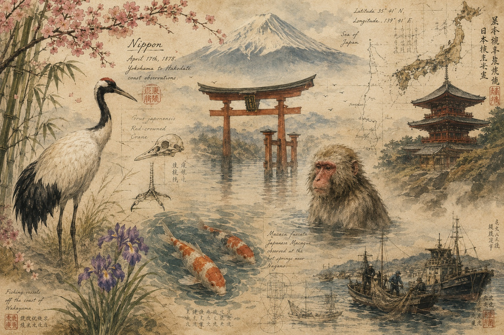

Ancient Northeast Asians and coastal Ancestral Australo-Melanesians shaped early populations across the Japanese archipelago. Proto-Koreanic and proto-Japonic cultures emerged through agriculture, metallurgy, and spiritual traditions. The chapter explores the rise of the Jomon culture, the formation of Korean kingdoms, samurai rule, shogunates, and ninja espionage. Confucianism and Buddhism weave effortlessly through culture and traditional architecture. Landscapes around Mount Fuji, cherry blossoms, and wetlands intertwine with erotic art, theater, and tea ceremonies. The work ends with the Meiji Restoration, imperial expansion, and the destruction of Hiroshima and Nagasaki.

Branches of Ancient East Asians, c. 36,000-23,000 BCE, carried genetics from Ancient Northeast Asians and coastal Ancestral Australo-Melanesians into the Japanese archipelago. A faction dominated by Ancient Northeast Asians seeded the Korean Peninsula. The Jomon culture soared with cord-marked pottery, proto-Japonic language, thatched-roof pit homes, and evocative figurines—dogū, c. 14,000–300 BCE. Agriculturalists from the Korean Peninsula sailed to the Japanese archipelago, coalesced, and displaced the Jomon to the fringes, c. 1,000 BCE.
Across the sea, archaeologists on the Korean Peninsula uncovered cave art and comb-patterned jars crafted by proto-Koreanic speakers, c. 6,000 BCE. Dolmen structures illustrated shamanic Musok rituals, c. 3,000 BCE. In one myth, a bear turned into Ungnyeo, a woman. A man, Hwanung, descended from the sky after a prayer. Once Ungnyeo and Hwanung wed, Dangun Wanggeom, a child from the union, founded Gojoseon, the first Korean kingdom, c. 2,333 BCE.
On the Japanese archipelago, rice cultivation, metal fabrication, and sword production advanced, c. 300 BCE–300 CE. Civilization solidified through official historians, codified governance, Confucianism, and Buddhism. The capital moved to Heian-kyo or Kyoto. Heritage flourished with literature, art, and kimono designs, c. 794–1,185 CE. Mongols threatened Japan and suffered massive losses from a divine wind, kamikaze, c. 1,162–1,281 CE.
Samurai served as military for nobles, trained with Sumo wrestler exercises, governed regions, and practiced Confucianism. The elite martial artists ruled, c. 1,180–1,185 CE, followed by the Shogun, c. 1,185-1,868 CE. Covert Ninjas spied, sabotaged, and assassinated. Soldiers surfaced across Asia as Warrior Monks, Sohei, Muay Thai Fighters, Javanese Warriors, Khalsa Sikhs, Rajputs, Gurkhas, and Shaolin Monks.
Mount Fuji cast quiet shadows on walkways lined with cherry blossom, wisteria, and ginkgo trees. Snow-dusted peaks muted the sounds of solitary serows and cold-adapted macaques in hot springs. In the wetlands, whales surfaced as long-legged cranes and spoonbills dove overhead. Landscapers created photogenic gardens with koi ponds, stone paths, and arched bridges. Scenes opened onto deer parks, bamboo forests, or blankets of bluebells. Master architects accented Shinto shrines and ryokans with steep curved roofs, lanterns, and sheer paper doors, c. 1,336-1,573 CE.
Silk Road styles—embroidered kimonos, vivid cheongsams, and sheer saris, set Asia aflame. Echoes of the spice trade enhanced rice, fresh seafood, meats, and vegetable dishes. Diners mellowed with sake, kava tonics, and blue lotus or stimulated with chewed betel leaves and lime. Artisans elevated with Raku pottery, calligraphy, and woodblock prints, c. 1,600 CE. Live theater spotlighted handmade instruments and puppets used in traditional music, Kabuki, and Noh, c. 1,300-1,600 CE.
In the pleasure quarters, courtesans, oiran, dressed in silk, tempted visitors with music, dance, and poetry with elegant script. Simple leaves transformed into graceful tea ceremonies, sadō, c. 1,603-1,867 CE. The customs evolved into symbolic geishas. Spring Pictures, Shunga, described erotic art in Japan. A woodblock by Katsushika Hokusai, The Dream of the Fisherman's Wife, showed a female ravished by octopi.
In stitutions romanticized pederastic relationships with the Way of the Young, Wakashūdō. Works of art—Samurai and his Young Male Lover, Miyagawa Isshō, Onnagata and Older Male, Pupil of the Utagawa school, and Temple Page and Monk, Kitagawa Utamaro. Censorship drove the genre underground, c. 1,722 CE.
The Meiji Restoration dismantled the shogunate, centralized power under the emperor, and modernized with railways, industry, telegraphs, and military, 1,868 CE. After clashes with China and Russia, the turmoil of World War I, and the atomic devastation of Hiroshima and Nagasaki in World War II, Japan rose from ashes under Allied occupation, c. 1,945 CE.